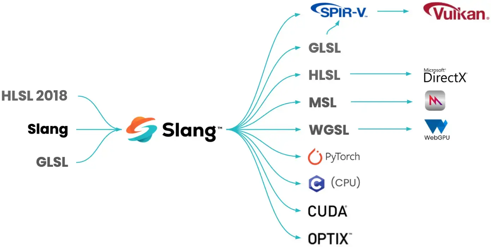

Slang Shading Language in Vulkan
Vulkan does not directly consume shaders in a human-readable text format, but instead uses SPIR-V as an intermediate representation. This opens the option to use shader languages other than e.g. GLSL, as long as they can target the Vulkan SPIR-V environment.
One such language is the Slang Shading Language developed by NVIDIA. It was designed to address the evolving needs of real-time graphics development, especially with regard to shader code bases getting larger and more complex. It supports multiple APIs, among them is first-class support for Vulkan’s SPIR-V.

Slang is developed in the Open Source and is under the governance of Khronos, meaning it has broad industry support and is actively maintained.
Its syntax is similar to HLSL with additions like modules to make the language easier to use and to better handle complex code bases.
It has great tooling support with debuggers like RenderDoc and Nsight. Syntax highlighting is available for most popular IDEs like Visual Studio and Visual Studio Code.
Key differences between Slang and GLSL
This section summarizes the most important differences a developer will encounter when moving from GLSL to Slang.
| Feature | Slang | GLSL |
|---|---|---|
Programming style |
Object-oriented (C++-like) |
Procedural (C-like) |
Stages per source file |
Multiple |
One |
Entry point name |
User-defined |
Always |
Stage declaration |
|
Compiler flag or file extension |
Vector types |
|
|
Matrix types |
|
|
Default matrix layout |
Column-major (Command-line), row-major (Library) |
Column-major |
Resource binding |
Automatic or explicit |
|
File reuse |
|
|
Namespaces |
Yes |
No |
Interfaces and generics |
Yes |
No |
Pointers |
Yes (for GPU-side use) |
No |
Syntax comparison
Slang and GLSL differ heavily in their syntax. While GLSL is more procedural (like C), Slang is more object-oriented (like C++).
Here is the same shader written in both languages to give a quick comparison on how they basically differ, including the aforementioned namespace that e.g. adds explicit locations:
GLSL
In GLSL, you need one shader per stage.
Vertex shader
#version 450
layout (location = 0) in vec3 inPos;
layout (location = 1) in vec2 inUV;
layout (binding = 0) uniform UBO
{
mat4 projection;
mat4 model;
} ubo;
layout (location = 0) out vec2 outUV;
void main()
{
outUV = inUV;
gl_Position = ubo.projection * ubo.model * vec4(inPos.xyz, 1.0);
}Slang
In Slang, a single file can contain multiple shader stages. This helps reduce duplication. Also note how we don’t have to specify explicit bindings, as they’re implicitly deduced for ubo and samplerColor from their ordering.
struct VSInput
{
float3 Pos;
float2 UV;
float3 Normal;
};
struct VSOutput
{
float4 Pos : SV_POSITION;
float2 UV;
};
struct UBO
{
float4x4 projection;
float4x4 model;
};
ConstantBuffer<UBO> ubo;
Sampler2D samplerColor;
[shader("vertex")]
VSOutput vertexMain(VSInput input)
{
VSOutput output;
output.UV = input.UV;
output.Pos = mul(ubo.projection, mul(ubo.model, float4(input.Pos.xyz, 1.0)));
return output;
}
[shader("fragment")]
float4 fragmentMain(VSOutput input)
{
return samplerColor.Sample(input.UV);
}Using Slang in your application
From the application’s point-of-view, using Slang is exactly the same as using GLSL. As the application always consumes shaders in the SPIR-V format, the only difference is in the tooling to generate the SPIR-V shaders from the desired shading language.
Compiling shaders
To get SPIR-V from Slang requires a compiler. Just like GLSL and HLSL, Slang comes with both an offline compiler (a binary for multiple operating systems) and a library for runtime compilation. Both can be downloaded via github and are also part of the Vulkan SDK.
Offline compilation using the stand-alone compiler
Compiling a shader offline via the pre-compiled slangc binary is similar to compiling with glslang:
slangc texture.slang -target spirv -o texture.vert.spvThis will generate a single SPIR-V file with all shader stages provided in the Slang source file.
Specific shader stages can be compiled like this:
slangc texture.slang -target spirv -entry vertexMain -stage vertex -o texture.vert.spvCapabilities are implicitly enabled based on feature usage, but can also be explicitly specified:
slangc heap.slang -target spirv -entry vertexMain -stage vertex -o heap.vert.spv -capability spvDescriptorHeapEXTThe resulting SPIR-V can then be directly loaded by the app, same as SPIR-V generated from GLSL.
Runtime compilation using the library
Slang can also be integrated into a Vulkan application using the Slang Compiler API. This allows for runtime compilation of shaders. Doing so requires you to include the slang compiler headers and link against the slang (or slang-compiler) library.
Compiling Slang to SPIR-V at runtime then is pretty straight-forward:
#include "slang/slang.h"
#include "slang/slang-com-ptr.h"
...
// Initialize the Slang shader compiler
slang::createGlobalSession(slangGlobalSession.writeRef());
auto slangTargets{ std::to_array<slang::TargetDesc>({ {.format{SLANG_SPIRV}, .profile{slangGlobalSession->findProfile("spirv")} } }) };
auto slangOptions{ std::to_array<slang::CompilerOptionEntry>({ { slang::CompilerOptionName::EmitSpirvDirectly, {slang::CompilerOptionValueKind::Int, 1} } }) };
slang::SessionDesc slangSessionDesc{
.targets{slangTargets.data()},
.targetCount{SlangInt(slangTargets.size())},
// Match GLSL's matrix layout
.defaultMatrixLayoutMode = SLANG_MATRIX_LAYOUT_COLUMN_MAJOR,
.compilerOptionEntries{slangOptions.data()},
.compilerOptionEntryCount{uint32_t(slangOptions.size())}
};
// Load and compile the shader
Slang::ComPtr<slang::ISession> slangSession;
slangGlobalSession->createSession(slangSessionDesc, slangSession.writeRef());
Slang::ComPtr<slang::IModule> slangModule{ slangSession->loadModuleFromSource("shader", "shader.slang", nullptr, nullptr) };
Slang::ComPtr<ISlangBlob> spirv;
slangModule->getTargetCode(0, spirv.writeRef());
VkShaderModuleCreateInfo shaderModuleCI{
.sType = VK_STRUCTURE_TYPE_SHADER_MODULE_CREATE_INFO,
.codeSize = spirv->getBufferSize(),
.pCode = (uint32_t*)spirv->getBufferPointer()
};
// Create the shader module to be used by the application
VkShaderModule shaderModule{};
chk(vkCreateShaderModule(device, &shaderModuleCI, nullptr, &shaderModule));
// Take shader stages from the single module we just compiled
VkPipelineShaderStageCreateInfo vertexShader{
.sType = VK_STRUCTURE_TYPE_PIPELINE_SHADER_STAGE_CREATE_INFO,
.stage = VK_SHADER_STAGE_VERTEX_BIT,
.module = shaderModule, .pName = "main"
};
VkPipelineShaderStageCreateInfo fragmentShader{
.sType = VK_STRUCTURE_TYPE_PIPELINE_SHADER_STAGE_CREATE_INFO,
.stage = VK_SHADER_STAGE_FRAGMENT_BIT,
.module = shaderModule, .pName = "main"
};
VkGraphicsPipelineCreateInfo pipelineCI{
...
.stageCount = 2,
.pStages = shaderStages.data(),
};
chk(vkCreateGraphicsPipelines(device, VK_NULL_HANDLE, 1, &pipelineCI, nullptr, &pipeline));